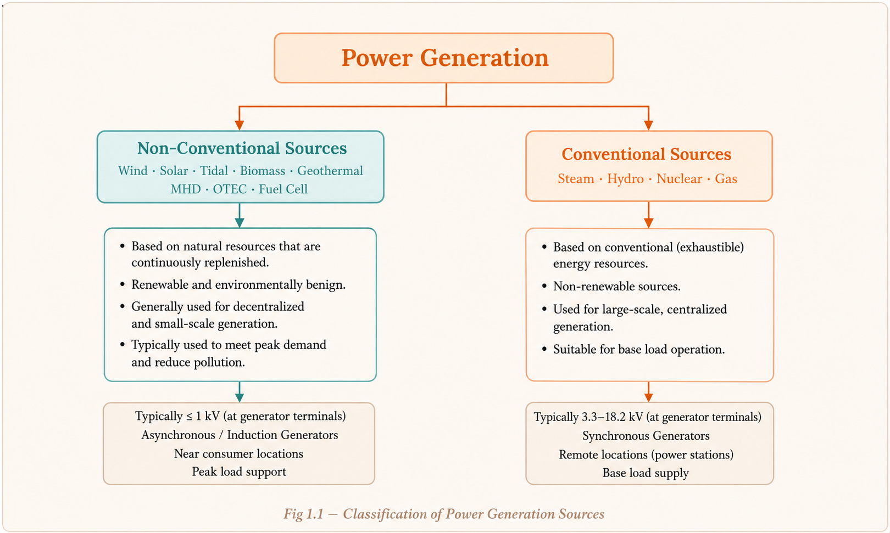
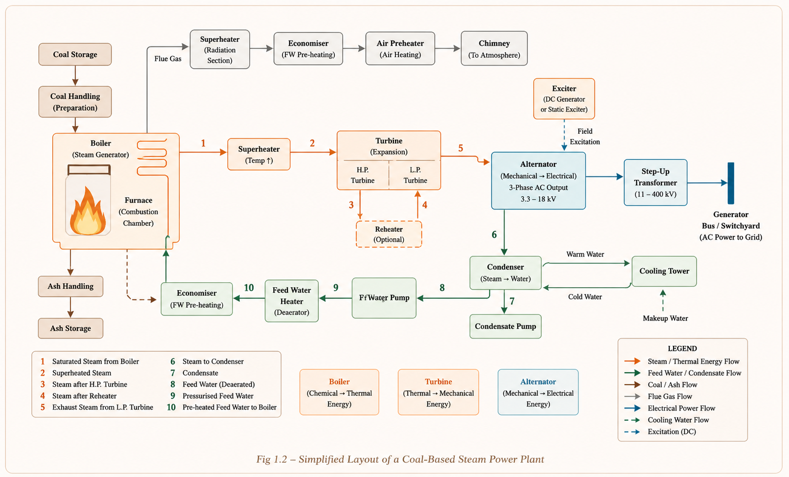
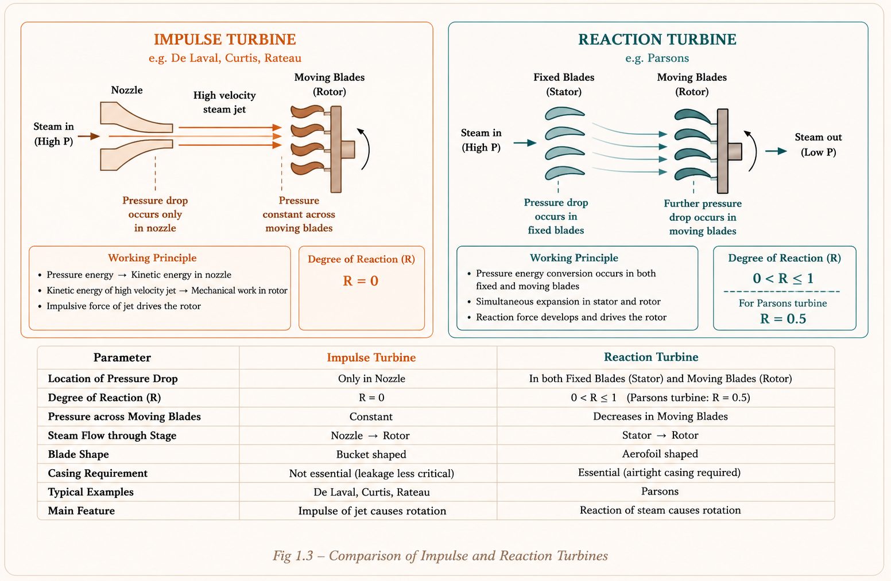
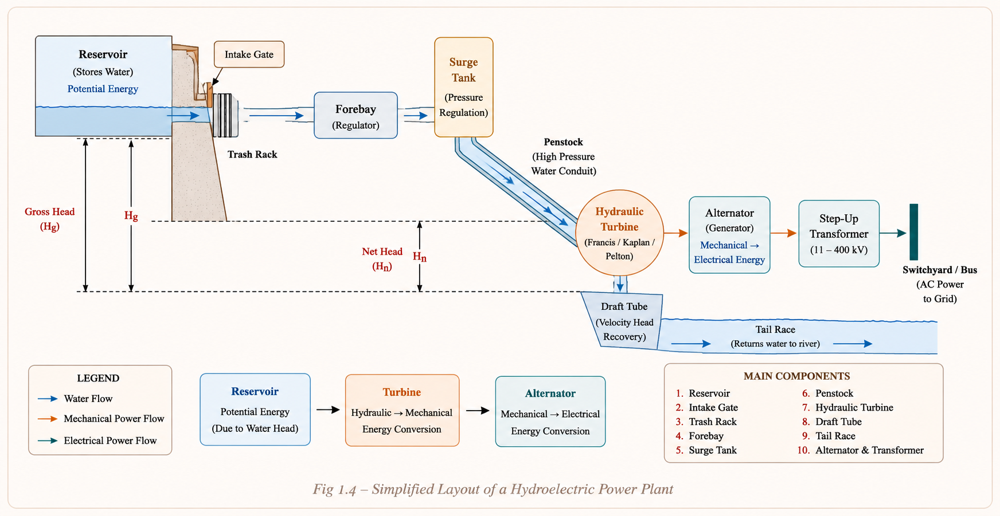
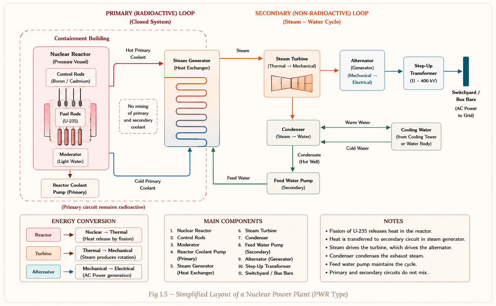

A complete, exam-focused study of how electrical energy is generated — from coal-fired steam plants and gravity-driven hydro stations to nuclear reactors. Built for GATE EE, ESE, and PSU aspirants.
Before we dive into each plant type, let's build the big picture. Every electrical power system starts at a generating station — a facility that converts some form of primary energy (heat, potential energy, nuclear, wind, solar) into electrical energy. The generated electricity then travels through a transmission and distribution network to reach consumers.[1]
Generating stations contribute over 80% of a country's installed capacity. Understanding their operating principles, site selection, efficiency limits, and equipment is directly tested in GATE (typically 2–4 marks per paper) and in detail in ESE/IES.

| # | Parameter | Non-Conventional | Conventional |
|---|---|---|---|
| 1 | Capacity | Small; short duration | Bulk; long duration |
| 2 | Location | Near consumer premises | Remote, geography-driven |
| 3 | Weather dependence | Day-to-day dependent | Weather-independent |
| 4 | Cost structure | Low fixed + High running cost | High fixed + Low running cost |
| 5 | Load type | Peak load (except Geothermal) | Base load (except Gas) |
| 6 | Generator type | Asynchronous (DC, AC, Induction) | Synchronous generators |
| 7 | Network | Distribution only | Transmission + Distribution |
| 8 | Generated voltage | ≤ 1 kV | 3.3, 6.6, 11, 13.2, 18.2 kV |
Conventional sources use synchronous generators and are connected to both transmission and distribution networks. Non-conventional use asynchronous (induction) generators connected only to the distribution network. This distinction frequently appears in objective questions.
A steam power plant (also called a thermal power station) converts the chemical energy of coal into electrical energy through a sequence of thermodynamic processes: combustion → heat → steam → mechanical rotation → electrical energy.[1]
Think of it like a massive pressure cooker. Coal burns → water boils → steam rushes out with enormous force → it spins a wheel (turbine) → the spinning wheel drives a generator. The "used" steam is then cooled back to water and recycled.
Selecting the right location saves millions in operating costs over the plant's 30–40 year lifetime. Key factors considered by engineers:[1]

Coal is transported by rail or road and stored at the coal storage plant. It is then delivered to the coal handling plant where it is pulverized (crushed into fine powder) to increase its surface area, promoting rapid combustion with less excess air. The pulverized coal is fed to the boiler by belt conveyors.[1]
More surface area → faster combustion → boiler can be started quickly → fast response to load changes → higher efficiency. Indian bituminous coal (semi-bituminous preferred) has ash content of 20–40%; the ash is removed and stored.
A boiler converts water into steam using the heat of combustion. Two types are commonly used in power plants:[1]
A superheater raises the steam temperature well above the boiling point of water (superheated steam). It derives heat from flue gases and is placed between the boiler and turbine.[1]
Why do we need superheating? Wet steam (saturated steam with moisture) erodes turbine blades. Superheated steam: (1) reduces steam consumption per unit output, (2) eliminates condensation loss, (3) eliminates blade erosion, (4) improves overall efficiency.
The economiser consists of closely spaced parallel tubes. Feed water on its way to the boiler flows through these tubes while outgoing flue gases flow outside, transferring waste heat back to the feed water. This recovers 10–25% of fuel energy that would otherwise be wasted, raising boiler efficiency significantly.[2]
Placed between the economiser and chimney, the air pre-heater uses residual flue gas heat to preheat the incoming combustion air. This improves boiler efficiency further by reducing the temperature of gases going up the chimney and raising the flame temperature.[1]
A steam turbine converts the energy of steam into mechanical (rotary) energy. There are two fundamental types:[2]

The condenser serves two vital functions: (1) creates a very low vacuum pressure at the turbine exhaust, enabling maximum expansion of steam for higher mechanical output; (2) recovers the condensed steam as feed water for the boiler, improving the overall heat cycle efficiency. Without a condenser, steam would be exhausted at atmospheric pressure, losing a significant portion of its energy.[1]
Cooling towers dissipate the heat absorbed by cooling water in the condenser back to the atmosphere. Three types exist: Natural draught (no fan; uses hot air buoyancy), Forced draught (fan at bottom), and Induced draught (fan at top).[2]
Steam bled from the turbine at intermediate stages heats the condensate before returning it to the boiler. This regenerative heating improves plant efficiency by reducing the amount of heat needed in the boiler, removes dissolved oxygen and CO₂ (which would corrode the boiler), and eliminates thermal stress from cold water entering the hot boiler.[1]
Each alternator is coupled to a steam turbine and converts mechanical energy into 3-phase electrical energy. In thermal plants, alternators are typically 2-pole or 4-pole machines running at 3000 rpm (or 1500 rpm) for 50 Hz operation. Note: \( N_s = \frac{120f}{P} \) where \(N_s\) = synchronous speed, \(f\) = frequency, \(P\) = number of poles.[3]
The exciter is a DC generator whose primary function is to supply DC power to the field system (rotor) of the alternator. It is mounted on the same shaft as the alternator. Its capacity is about 0.5% to 3% of the main alternator capacity. In some cases, a pilot exciter may be used to excite the main exciter.[1]
Placed between the combustion chamber and chimney (connected to 30 kV DC), the ESP removes fine dust particles from flue gas before they escape through the chimney, reducing environmental pollution. It is mandatory in modern Indian thermal plants per pollution control norms.[2]
The overall efficiency of a steam power station is quite low — typically around 29–32%. Why so low? The Carnot theorem limits the maximum possible efficiency between any two temperatures, and huge heat losses occur in the condenser and at various stages of the plant.[1]
Two major reasons: (a) A huge amount of heat is lost in the condenser — this is a thermodynamic necessity (Rankine cycle), and (b) heat losses at various stages (boiler, turbine, generator, transformers). The condenser alone rejects ~55–60% of input heat.
A hydro-electric power station converts the potential energy of water at a height (head) into electrical energy. Unlike thermal plants, there is no fuel cost, no combustion, and no pollution — making hydro one of the most economical and clean sources of bulk power.[1]
Imagine holding a bucket of water at height — it has stored (potential) energy. When released, gravity accelerates the water downward, converting potential energy to kinetic energy. In a hydro plant, this falling water hits a turbine wheel, spinning it to generate electricity. The higher the water and the greater its flow, the more power produced.

| Component | Function | Key Detail |
|---|---|---|
| Water Reservoir | Stores water for use in dry season | Large catchment area needed |
| Dam | Creates head; increases working head | Strong foundation essential |
| Trash Rack | Prevents debris from entering penstock | Steel bars at intake of penstock |
| Fore Bay | Regulatory reservoir; stores/supplies water on load variation | Also called head pond |
| Surge Tank | Absorbs pressure variations; prevents water-hammer | Large cylindrical tank near penstock |
| Penstock | Carries water from surge tank to turbine | Steel/concrete pressure pipe; anchor blocks support it |
| Spill Way | Safety valve for the dam; discharges excess water | Prevents dam overtopping |
| Draft Tube | Connects turbine to tailrace; recovers velocity energy | Permits turbine installation above tailrace |
The surge tank prevents water hammer — the destructive pressure surge when turbine gates suddenly close (load suddenly drops). It acts like a shock absorber: when load decreases → gates close → water backed up flows into surge tank. When load increases → surge tank supplies extra water to penstock instantly.
| Head Range | Specific Speed (Ns) | Turbine Type | Application |
|---|---|---|---|
| Very High (>250 m) | Slow (12–70) | Pelton Wheel | High mountainous terrain |
| High (71–250 m) | Medium (80–420) | Francis or Pelton | River dams with high falls |
| Medium (15–70 m) | Medium (80–420) | Francis / Kaplan | Most large dam plants |
| Low (<15 m) | High (310–1000) | Propeller / Kaplan | Run-of-river plants |
Specific speed (\(N_s\)) is defined as the hypothetical speed of a turbine that produces 1 HP under a head of 1 metre. It is a key turbine selection parameter:[1]
Axial flow (flow ∥ rotation axis): Propeller, Kaplan turbines. Tangential flow (flow tangential to runner): Pelton wheel. Mixed/Radial inward flow (water enters radially, exits axially): Modern Francis turbine.
| Term | Definition |
|---|---|
| Water Head | Difference in water levels between upstream and downstream |
| Gross Head | Total head difference between head race (upstream) and tail race (downstream) |
| Net (Effective) Head | Gross Head − Head losses in conveyor system from head race to turbine entrance |
| Rated Head | = Net Head − Losses in guide passage and turbine entrance; head doing actual work |
| Classification Basis | Types |
|---|---|
| Load characteristics | Base-load plants · Peak-load plants |
| Storage / Hydraulic | Run-of-river · Run-of-river with pondage · Storage plants · Pumped storage |
| Head (standard) | Low head (<30 m, Kaplan) · Medium (30–250 m, Francis) · High (>250 m, Pelton) |
| Plant capacity | Micro (<100 kW) · Mini · Small · Medium · High · Super Hydro |
During off-peak hours, surplus electricity pumps water from the lower reservoir back to the upper reservoir. During peak demand, this stored water generates electricity again. The turbine works as a reversible turbine (motor/generator). Examples: Nagarjunasagar-v Hydro, Srisailam left bank power project.
A nuclear power station converts nuclear energy into electrical energy. The nucleus of a heavy atom (like Uranium-235) is split apart in a controlled chain reaction called nuclear fission, releasing enormous amounts of heat. This heat is then used to produce steam and drive a conventional steam-turbine-alternator set — just like a coal plant, but with no combustion.[1]
Think of nuclear fuel as an incredibly energy-dense alternative to coal. Just 1 kg of U-235 produces as much energy as approximately 2700 tonnes of coal. The nuclear reactor is simply a very sophisticated "boiler" that uses atomic heat instead of burning coal.

The nuclear reactor is the apparatus where U-235 undergoes controlled nuclear fission. It controls the chain reaction. If the chain reaction is NOT controlled, the rate of fission increases exponentially, resulting in an explosion. The reactor's main components:[1]
| Component | Role | Material Used |
|---|---|---|
| Fuel | Source of fission energy | Natural U-238, Enriched U-235, Plutonium |
| Moderator | Slows down (thermalizes) neutrons so they can cause more fissions | Graphite, Beryllium, Heavy water (D₂O), Ordinary water |
| Control Rods | Absorb excess neutrons to control chain reaction rate | Cadmium, Boron (strong neutron absorbers) |
| Coolant | Carries heat from reactor core to heat exchanger | CO₂, H₂O, Heavy water, Liquid sodium |
| Reflector | Reflects escaping neutrons back into the core | Graphite, Beryllium |
| Reactor Vessel | Provides structural containment | Heavy steel with radiation shielding |
| Reactor Type | Moderator | Coolant | Fuel |
|---|---|---|---|
| AGR (Advanced Gas Cooled) | Graphite | CO₂ | Uranium |
| PWR (Pressurised Water) | Pressurised water | Pressurised water | Enriched U-235 |
| BWR (Boiling Water) | Ordinary water | Ordinary water | Enriched |
| FBR (Fast Breeder) | None (no moderator) | Liquid sodium | U-235 & U-238 |
An FBR produces more fissile material than it consumes — it breeds new fuel! Depleted U-238 absorbs neutrons and gets converted to Pu-239 (fissile). The Breeding Ratio (ratio of secondary fuel atoms formed to primary fuel atoms consumed) is ≥ 1. India's prototype FBR at Kalpakkam is a key national project.
Coal consumption rate = 5000 kg/hr = 5000/3600 kg/s
Heat input = mass rate × calorific value = (5000/3600) × 6000 × 4186 J/s (converting kcal to J: 1 kcal = 4186 J)
Heat input \(= \frac{5000 \times 6000 \times 4186}{3600}\) W \(= 34.88 \times 10^6\) W = 34.88 MW
Electrical output = \(\eta_{\text{overall}}\) × Heat input = 0.30 × 34.88 = 10.46 MW
Using the power equation: \(P = w \cdot Q \cdot H \cdot \eta\)
\(P = 9.81 \times 50 \times 80 \times 0.85 \) kW
\(P = 9.81 \times 50 \times 80 \times 0.85 = 33,354 \) kW = 33.35 MW
\(N_s = \frac{N\sqrt{P}}{H^{5/4}} = \frac{300 \times \sqrt{5000}}{(100)^{5/4}}\)
\(\sqrt{5000} = 70.71\) and \(100^{5/4} = 100^{1.25} = 316.23\)
\(N_s = \frac{300 \times 70.71}{316.23} = \frac{21213}{316.23} \approx 67\) rpm
Since \(N_s \approx 67\) (in range 12–70), this is a Pelton Wheel (slow speed, high head turbine).
Pumped storage hydro plants are used primarily for which purpose?
Explanation: During off-peak periods, surplus power pumps water to the upper reservoir. During peak demand, it is released to generate electricity. This is essentially a large-scale energy storage system.
For a hydro plant with a net head of 200 metres, which turbine is most suitable?
Explanation: 200 m falls in the high head range (71–250 m). Both Francis and Pelton turbines are suitable at this range, with Pelton preferred toward the higher end.
A 2-pole alternator in a thermal power plant runs at what speed for 50 Hz operation?
Explanation: \(N_s = \frac{120f}{P} = \frac{120 \times 50}{2} = 3000\) rpm. A 4-pole machine runs at 1500 rpm. Thermal plants use cylindrical rotor (2 or 4 pole) high-speed alternators.
Control rods in a nuclear reactor are made of cadmium or boron because these materials:
Explanation: Cadmium and boron have very high neutron absorption cross-sections. Inserting them deeper absorbs more neutrons → slows or stops chain reaction. The moderator (graphite, water) slows neutrons — this is a different function.
The primary purpose of a surge tank in a hydro-electric plant is to:
Explanation: When turbine gates suddenly close (load drops), inertia of water in the long penstock causes a pressure surge (water hammer). The surge tank provides a nearby open water surface that absorbs this pressure variation. Without it, the penstock can rupture.
The overall efficiency of a steam power station is approximately 29% mainly because of:
Explanation: The Rankine cycle mandates heat rejection at the condenser (low temperature sink). Approximately 55–60% of heat input is rejected here. This is a thermodynamic law constraint, not an engineering failure. Additional losses occur in boiler (15%), turbine (5%), and electrical systems (1–2%).
Students confuse moderator (slows neutrons to thermal energy — needed for U-235 fission) with control rods (absorb neutrons to control rate). Both are different components with different materials and purposes. The FBR has NO moderator — it uses fast neutrons intentionally.
The condenser converts exhaust steam to water (inside the steam cycle). The cooling tower cools the cooling water that was used in the condenser (external water circuit). They work together but are different components.
The economiser uses flue gas heat to preheat feed water going to the boiler. The air preheater uses flue gas to preheat combustion air coming from atmosphere. Both recover waste heat but for different purposes. Economiser comes before air preheater in the flue gas path.
Hydro plants have ~85–90% efficiency; steam plants only ~29%. Students sometimes confuse these. The reason: hydro has NO thermodynamic heat cycle — it directly converts mechanical energy with very few loss stages. Steam plants obey Carnot/Rankine cycle limits.
When P is in HP, use \(N_s = N\sqrt{P}/H^{5/4}\). When P is in kW, multiply by 1.165. GATE sometimes gives P in kW so you must convert. Also, specific speed classifies turbine type, not the actual speed of operation.
Exciter capacity is 0.5% to 3% of main alternator capacity — not 5% or 10%. This small percentage is tested in MCQs.
Overall \(\eta \approx 29\text{--}32\%\) • Coal → Steam → Mech → Elect • Alternator: 2-pole at 3000 rpm (50 Hz) • Exciter: DC generator, 0.5–3% of alternator capacity • ESP at 30 kV DC removes ash
\(\eta \approx 85\text{--}90\%\) • \(P = wQH\eta \text{ kW}\) • Pelton: very high head (>250 m) • Francis: medium (70–250 m) • Kaplan: low head (<30 m) • Surge tank prevents water hammer • Draft tube allows above-tailrace installation
U-235 fission • \(E = mc^2\) • Control rods = Cd or B (absorbers) • Moderator slows neutrons • FBR: no moderator, liquid Na coolant • Breeding ratio \(\ge 1\) in FBR • Radioactive waste is major problem
\(N_s\) 12–70 → Pelton • \(N_s\) 80–420 → Francis • \(N_s\) 310–1000 → Kaplan/Propeller • Selection depends on head, specific speed, efficiency, part-load operation
Non-conv: ≤1 kV, Asynchronous gen., near consumer, peak load, low fixed cost • Conventional: 3.3–18.2 kV, Synchronous gen., remote, base load, high fixed cost
\(N_s = \frac{N\sqrt{P}}{H^{5/4}}\) rpm [P in HP] • \(P_{\text{hydro}} = wQH\eta \text{ kW} \, [w = 9.81 \text{ kN/m}^3]\) • \(N_s(\text{kW}) = \frac{1.165 \times N\sqrt{P}}{H^{5/4}}\) • \(N_s(\text{alternator}) = \frac{120f}{P}\) rpm
"Super Economiser Air Comes (to) Chimney" → Superheater → Economiser → Air preheater → (Electrostatic precipitator) → Chimney. This is the order of flue gas flow after the boiler.
"Pelton Flies High, Francis is Medium, Kaplan is Low" → Pelton = Very High Head, Francis = Medium Head, Kaplan = Low Head. Think: Pelton is a Pelton rocket — rockets go to high altitudes.
"Fuel Moderates Control Coolly, Reflected in a Vessel" → Fuel, Moderator, Control rods, Coolant, Reflector, Reactor Vessel. Remember: Control rods absorb; Moderator slows — never swap them.
Have a question on generating stations, turbine selection, nuclear reactors, or efficiency calculations? Type below or pick a suggestion.
PSU interviews (NTPC, NHPC, NPCIL) frequently ask: (1) Why is the overall efficiency of thermal plants only 29%? (Answer: Rankine cycle thermodynamic limits — condenser heat rejection is unavoidable). (2) What is the function of the economiser? (3) Explain how a pumped storage plant works. (4) Why is the FBR called a "breeder"? (5) What material is used for control rods and why?
All technical content is derived from the following standard textbooks. No content is reproduced verbatim — all explanations, examples, and diagrams are original to Aarova AI.